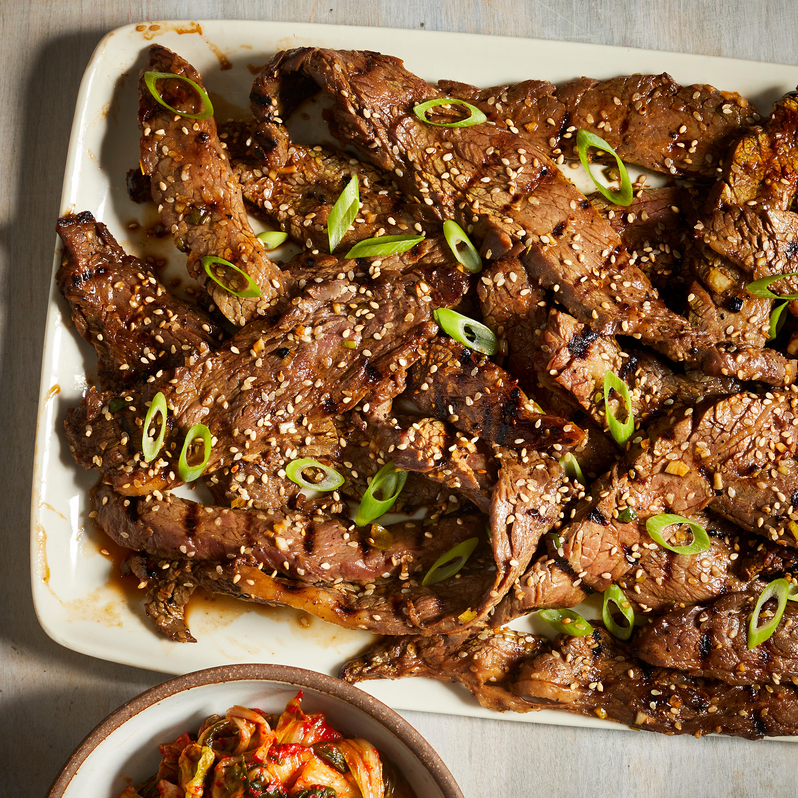

Description
Bulgogi, or Korean barbecue, literally means "fire meat." Thin slices of beef
(or sometimes pork) are marinated in a sweet-savory sauce, then grilled to juicy
and flavorful perfection.
Ingredients
- 5 tablespoons soy sauce
- 1/4 cup chopped green onion
- 2 1/2 tablespoons white sugar
- 2 tablespoons minced garlic
- 2 tablespoons sesame seeds
- 2 tablespoons sesame oil
- 1/2 teaspoon ground black pepper
- 1 pound flank steak, thinly sliced
Instructions
-
Whisk soy sauce, green onion, sugar, garlic, sesame seeds, sesame oil, and
pepper together in a bowl
-
Place flank steak slices in a shallow dish. Pour marinade over top. Cover
and refrigerate for at least 1 hour or overnight.
-
Preheat an outdoor grill for high heat, and lightly oil the grate.
-
Quickly grill flank steak slices on the preheated grill until slightly charred
and cooked through, 1 to 2 minutes per side.